With one ordinary camera: a laptop webcam, a USB webcam or a phone. VisionTouch knows what it is projecting, predicts what the camera should see, and treats whatever differs as your hand.
An illustration. The projected picture is the app's real launcher screen.01
What you need
A projector
Showing your computer's screen, mirrored or as the main display. A plain wall or pull-down screen works best.
A webcam or phone
A laptop webcam, a USB webcam or a phone, placed so it sees the whole projected picture with a little margin, and kept still.
A computer
macOS 15 or later on Apple silicon, Windows x64, or Linux x64 with an X11 desktop session.
02
How it works
The camera does not see a quiet background: it sees the projected picture, which changes all the time, and your hand is lit by it. So instead of storing a photo of the empty wall, VisionTouch predicts the camera image from what it is projecting, frame by frame.
1
Calibrate, about 10 seconds
The projector shows a grid of 60 ArUco markers, a few colour mosaics, and a black and a white flash. From these VisionTouch learns where the picture lands in the camera image (a homography), how the camera sees each colour, and how long the camera and projector lag. It also straightens a crooked picture and recalibrates by itself if the camera or projector is knocked.
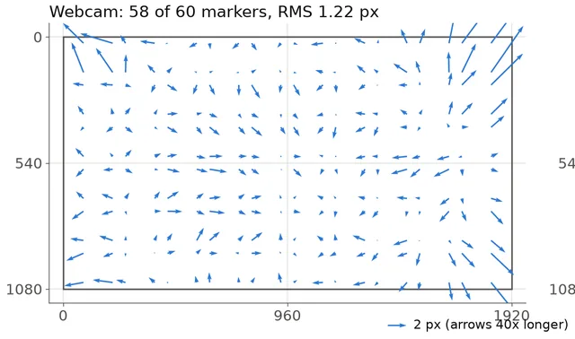
Error left at each marker corner (webcam, arrows drawn 40× longer): 58 of 60 markers, 1.22 px RMS.
2
Predict what the camera should see
Every frame, the screenshot from the matching moment is warped into the camera's view and passed through the learned colour map, then adjusted for the camera's changing exposure and for the rainbow bands a single-chip projector leaves in a rolling-shutter camera.
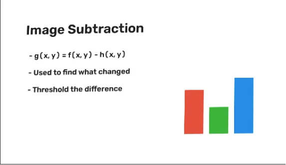
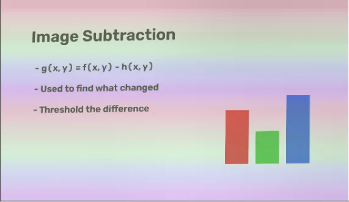
Screenshot, warped → predicted camera image.
3
Compare
Each camera pixel is compared with the prediction, with a small tolerance around edges so a one-pixel misalignment is forgiven. Whatever the screenshot cannot explain lights up: your hand and its shadow.
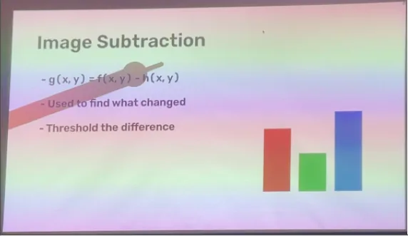
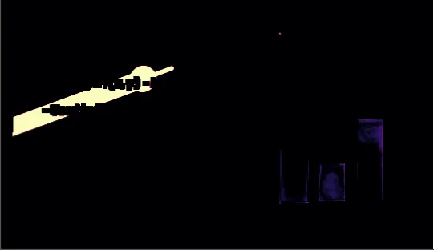
Camera frame → residual.
4
Find the fingertip
Thresholds and morphology clean the difference into a mask. An arm always enters from an edge, so the fingertip is the part of the blob farthest from where it enters. MediaPipe then reads the hand's pose on a crop around the tip: point, pinch, palm or fist.
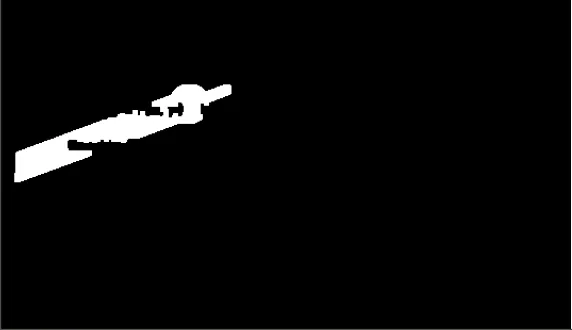
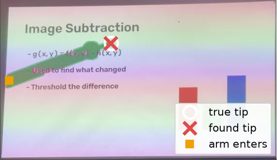
Mask → fingertip found.
5
Track and press
A Kalman filter smooths the pointer and predicts 60 ms ahead to hide part of the delay. Holding still for about 0.8 s, or pinching, becomes a press, sent to VisionTouch's apps or to the computer's own mouse.
point
hold still
press
Steps 2 to 4 show one real frame from the test rig (webcam, a light slide) with a synthetic hand painted into the picture. The full explanation of every stage, with its parameters: How VisionTouch works.
03
The apps
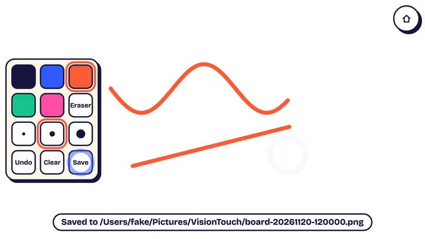
Board
Draw with your finger. Open your palm to erase.
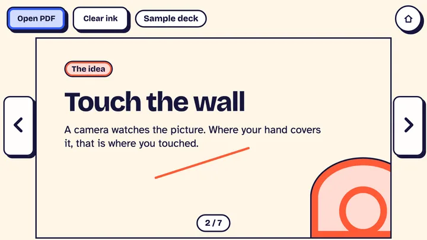
Slides
Present any PDF. Swipe or tap the edges to change pages, and draw on the page.
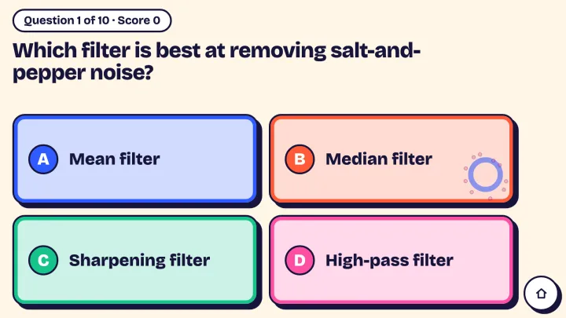
Quiz
Questions on image processing basics.
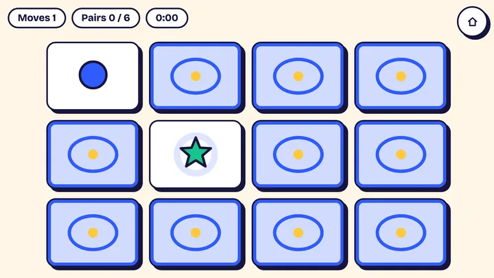
Memory
Find the six pairs.
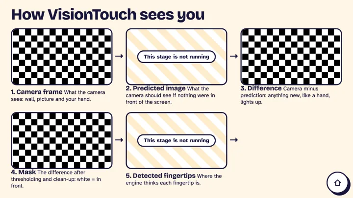
Pipeline
Watch each processing step live.
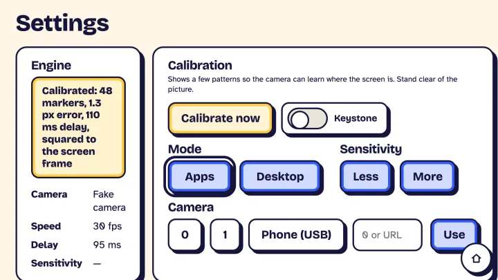
Settings
Calibrate, keystone, apps or desktop mode, camera.
Balloons Pop as many as you can.
Catch Catch the stars, avoid the bombs.
Accuracy Tap 20 targets; measures how precisely touches land.
Desktop mode Moves the computer's real mouse, so you can use any program. A small strip with a "back to apps" button stays on top.
Screenshots of the real app, taken with a simulated camera, so the status values shown in them are not measurements. To go home from any app, hold the home button for one second.
04
Gestures
Point
One finger moves the pointer.
Hold still or pinch
Hold about 0.8 s to click, or pinch thumb and index. Hold the pinch to drag. To draw without pinching: hold, move, hold again.
Open palm
Erase on the Board.
Swipe
A fast sideways swipe turns to the next or previous slide.
One camera cannot measure depth, so a click is a pause or a pinch, not contact with the wall. Pinch and palm need the hand-pose model.
05
Download
Your system
macOS
macOS 15 or later, Apple silicon. There is no Intel build: MediaPipe has no Intel macOS wheel.
The app is signed ad hoc, not notarized, so Gatekeeper may block it. If you trust the download, try to open it, then choose System Settings → Privacy & Security → Open Anyway and confirm.
Camera
to see the projected surface and your hand.
Screen & System Audio Recording
to capture the displayed image, so it can tell your hand from the projection. It captures the screen image only.
Accessibility
to move and click the pointer in desktop mode. You may need to switch it on yourself in Privacy & Security, then restart VisionTouch.
Extract it and run ./VisionTouch/VisionTouch from a terminal. It opens the stage in your default browser: move that window to the projector, go full screen, and keep the VisionTouch process running.
Use an X11 session: screen capture and mouse control do not work on native Wayland. A minimal Ubuntu also needs xdg-utils libegl1 libgles2 libx11-6 libxcb1 libxcb-randr0 libxcb-render0 libxcb-shm0 libxcb-xfixes0.
Through Continuity Camera the iPhone appears as an ordinary camera. Pick its number in Settings → Camera, or start with --camera 1 (or the next number), whichever shows the iPhone's view.
Android, over USB
Needs Android 12 or later, adb and scrcpy installed, and USB debugging switched on. Start with --camera android (or --camera android:SERIAL with several phones). Only the back camera is used; the phone's screen is left alone. If the scrcpy server file is not found, set SCRCPY_SERVER_PATH.
Keep it still
Put the phone on a stand: it must not move after calibration. Below or beside the projector works; a steep angle works too but lowers accuracy.
88 %of frames with a hand where the hand is found (webcam); 89 % with the phone.
12.1 pxmedian fingertip error (webcam), 0.63 % of the picture's 1920 px width. Phone: 10.1 px.
12 of 16picture-and-hand cases on the live rig with a median pointer error within 20 px (webcam; phone 14 of 16). No false hand on any clean picture.
184 mscamera and projector delay (webcam; phone 165 ms; it varies by a few tens of milliseconds between calibrations). The engine's own step takes 37 ms median (phone 41 ms).
5.3° → 0.11°edge tilt of the picture before and after automatic keystone correction (webcam).
Why each step is there
Clean pixels wrongly flagged as hand, webcam, as each step of the method is switched on. Lower is better.
Plain subtraction, one brightness fit91.2 %
+ colour map99.8 %
+ exposure adaptation86.0 %
+ row banding correction32.8 %
+ edge tolerance (full method)6.1 %
The colour map alone does not help, because the camera's exposure at test time differs from calibration time; it pays off once exposure adaptation is added.
Where it struggles
Busy content. Photos and cluttered desktops cause false detections. Plain backgrounds, slides, drawings and games work best.
Dark content. A hand over pure black is invisible to this method: there is no projected light to take away.
Dense text breaks up the hand's outline; on the live rig the dense text page gave the worst results of all pictures.
Delay. The camera and projector add a noticeable lag; the pointer predicts a little ahead to hide part of it.
One camera position. Moving the camera or projector needs a new calibration, which VisionTouch tries to do by itself.
Every number on this page, how it was measured, and the full tables: the project report.